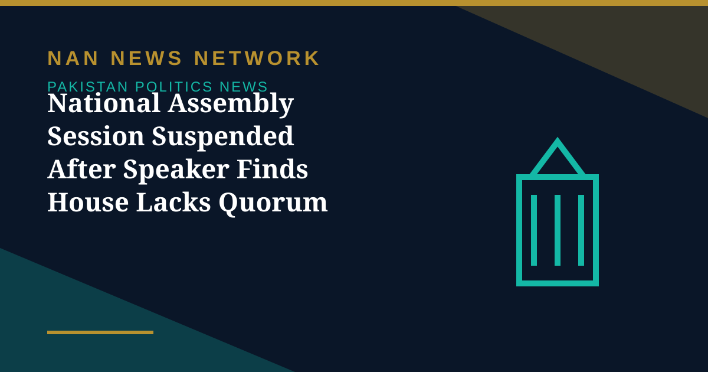

National Assembly Session Suspended After Speaker Finds House Lacks Quorum

The National Assembly session was suspended on Thursday after the Speaker found that the House did not have the required number of members present. Speaker Sardar Ayaz Sadiq ordered a break in proceedings once a headcount confirmed that quorum was incomplete, according to reports of the session.
How the session unfolded
The session began at 11:09 a.m. under the chairmanship of Speaker Sardar Ayaz Sadiq. Soon after proceedings commenced, Mian Fayyaz Hussain Chhajrra pointed out the absence of quorum, prompting the Speaker to order a headcount. After the count, the Speaker declared that the House was not in order and announced a break until the quorum was completed.
Business left on the agenda
The House had been expected to take up calling attention notices, motions, the introduction of bills, resolutions and other legislative business. Those items were delayed by the suspension, a recurring procedural hurdle when attendance falls short of the required threshold.
Why quorum matters
Quorum rules exist to ensure that decisions of the House are taken with a minimum level of participation from elected members. When the threshold is not met, proceedings cannot continue, and the sitting is paused until enough members return to the chamber.
The suspension is a procedural pause rather than an adjournment of the session itself, and the House is expected to resume once quorum is restored.
Sources: Public news reports, October 2026.
More on Pakistan Politics News
- Pakistan Proposes Parliamentary Friendship Group With Turkmenistan
- Lahore High Court Judge Mohsin Akhtar Kayani Resigns, Citing Executive Grip on Judiciary
- Pakistan Says Afghan Firing Kills One in South Waziristan Border District
- Pakistan Marks Kashmir Black Day With Rallies Across the Country
- National Assembly Passes Seven Private Members' Bills, Sends Six to Committees
- Pakistan Strongly Condemns Houthi Missile Attacks Near Makkah and Madinah
- Pakistan, Saudi Arabia and Turkiye Reported to Hold Tehran Talks on De-escalation
- Pakistan LPG Shortage Worsens as Iran Border Crossings Close
- Pakistan Ends Machine-Readable Passports and Switches Fully to E-Passports
- Pakistan Calls for a Fairer Global Order at the United Nations